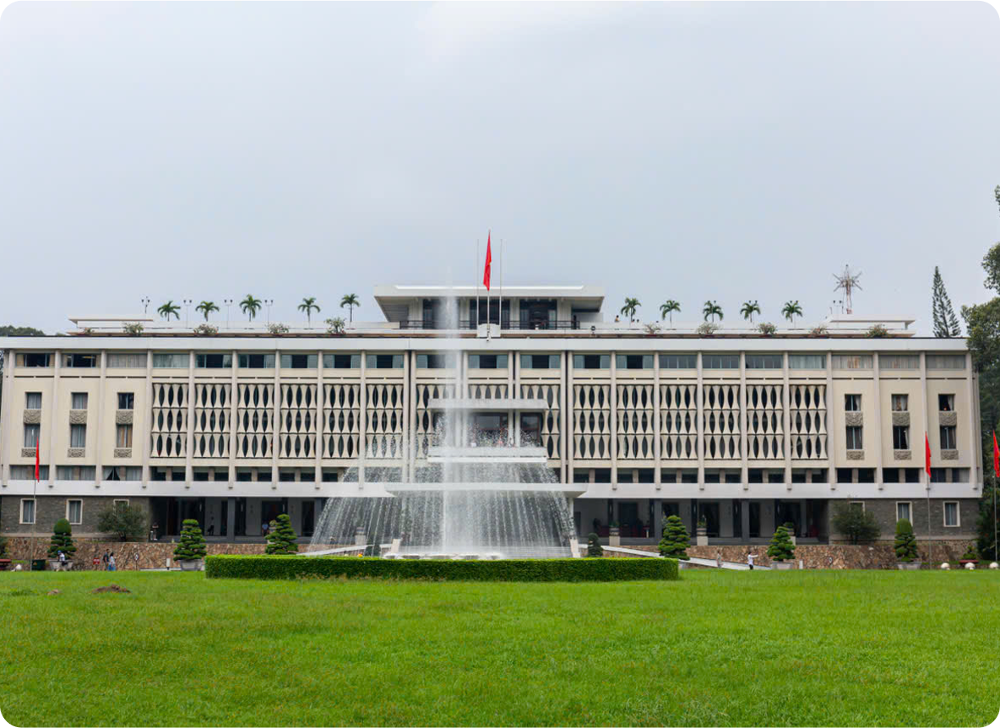

Bưu điện Sài Gòn, còn gọi là Tòa nhà Bưu điện Thành phố Hồ Chí Minh là một trong những công trình kiến trúc tiêu biểu tại Thành phố Hồ Chí Minh, Đây là tòa nhà được người Pháp xây dựng trong khoảng năm 1886–1891 với phong cách chiết trung theo đồ án thiết kế của kiến trúc sư Marie-Alfred Foulhoux. Đây là công trình kiến trúc mang phong cách phương Tây kết hợp với nét trang trí phương Đông.
Về lịch sử:
Ngay sau khi giành được Gia Định, vào ngày 11 tháng 11 năm 1860, Sở Dây thép Sài Gòn (hay còn gọi là Bưu điện Sài Gòn) được Pháp gấp rút khởi công để thiết lập hệ thống thông tin liên lạc, tọa lạc ngay trung tâm thành phố, , tòa nhà hơn 130 tuổi này là điểm tham quan nổi tiếng ở Thành phố Hồ Chí Minh.
Năm 2014, tòa nhà được sơn sửa với quy mô lớn nhất kể từ sau năm 1975, bao gồm sơn toàn bộ tòa nhà và sửa lại những chỗ bị dột.
